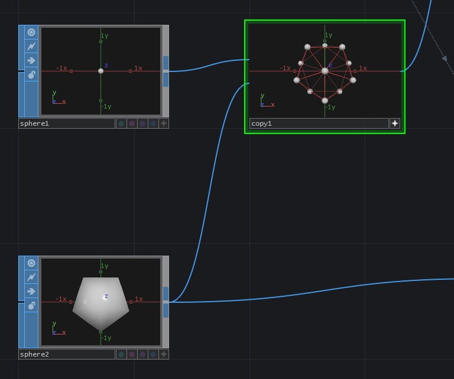

Instancing Instances
Copy SOP
A typical approach to instancing uses a piece of geometry to describe the positions of our instances — this is great, but we sometimes want more complex arrangements of instances. In tools like C4D, it’s not uncommon to have clones of clones — but in TouchDesigner instancing on the GPU doesn’t work exactly like that. Instead we need to do some additional set-up work to make this possible. For static arrangements, the copy SOP can be a great helper. Here the first input of the copy SOP is the shape to be copied, and the second input is the points where it will be copied.

In the image above, we create a sphere at each point of a reference sphere. That set of 12 spheres then becomes the source geometry to be instanced at the corner points of our box.

This approach is great for static sets of instances that are not overly complex. The copy SOP produces actual geometry rather than just instances on the GPU — which makes this less efficient in some cases, and not well suited for pieces that are animated. As a starting point, however, this is a great place to start understanding how instances work, and how to create complex arrangements.
Tested in TouchDesigner099 2020.23680
Updated 06.03.20
Matthew Ragan
Zoe Sandoval